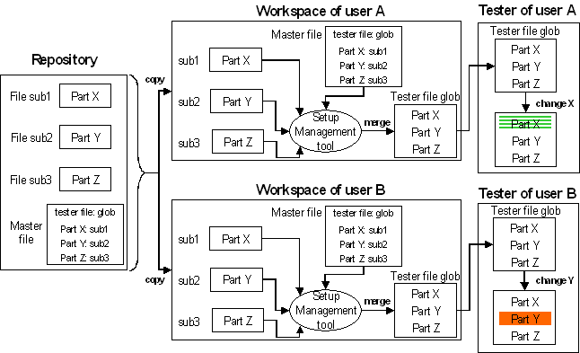
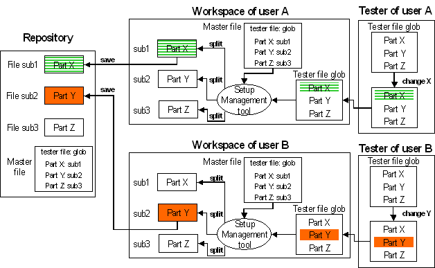

Concept of the Setup Management Tool
The basic idea of the Setup Management tool is to split up setup components such as the timing setup file or the testflow into smaller units which are stored in separate subfiles within a repository. In this way, if user A changes part X of the setup component, and user B simultaneously changes another, non-overlapping, part Y, each of them can store the part which he or she has changed in the repository without affecting the changes of the other one. The connection between the parts that make up one complete setup component is established by a master file which lists all the subfiles that belong to this setup component, and also specifies their content.
These master files are similar to the pattern master files which are used in the vector setup. There is, however, one important difference. A pattern master file can be passed to SmarTest as it is. This does not hold for the setup components that can be handled by the Setup Management Tool. SmarTest by itself does not support the concept of a master file for these components. Therefore the Setup Management Tool must merge the subfiles listed in the master file into a single setup file before they can be downloaded into the tester memory and changed. The name of this setup file is also defined in the master file.
This download direction of the process is shown in the following figure:

In this direction, the tester file entry in the master file supplies the name for the merged setup file.
Conversely, after this setup file has been changed in SmarTest, it must be divided again according to the specifications of the master file before the changes are stored in order that overwriting in the repository can be restricted to the parts that have been changed.
This direction is shown in the following figure:

In this direction, the tester file entry tells the Setup Management Tool which file to split.
This basic scenario can be varied in two respects:
- The granularity of the subfiles is controlled by the entries in the master file. In our example, each of the three parts is put into a separate subfile. But you could, for example, store parts Y and Z in the same subfile. To achieve this, you would simply have to specify the same file name for parts Y and Z in the master file.
- You can add a new part to, or delete an existing part from, the tester setup file. In this
case you can either add the name of the new part to the master file manually (or remove the name
of a deleted part, respectively) before splitting the setup file again, or leave updating the
master file to the Setup Management tool.
If you let the tool update the master file, it will not only create additional subfiles for new parts, but also add entries to the master file, and it will remove the entries of deleted parts from the master file. The formats of the file names which the tool uses for newly created parts are explained in the sections on the individual setup components.
The modified master file and, in the case of an addition, the new subfile must then also be stored back into the repository.
The Setup Management Tool can be called from the command line, or it can be integrated into the Test Program Explorer. In the latter case, its activity will be largely hidden from the user. He will have the impression that the master file is passed to SmarTest, and that the subfiles are saved without the detour over the tester file.
The format of the master file depends on the format of the respective setup component. Each of the different formats is described in the section where the respective component is discussed.